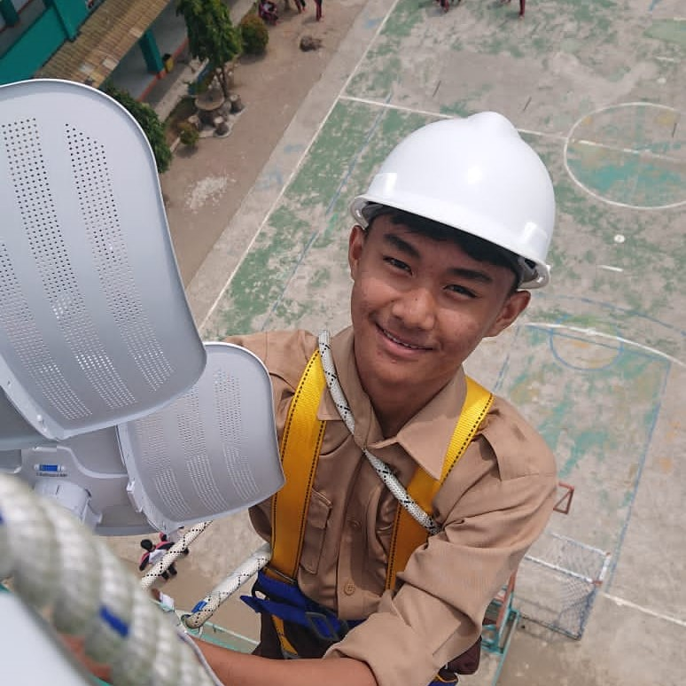
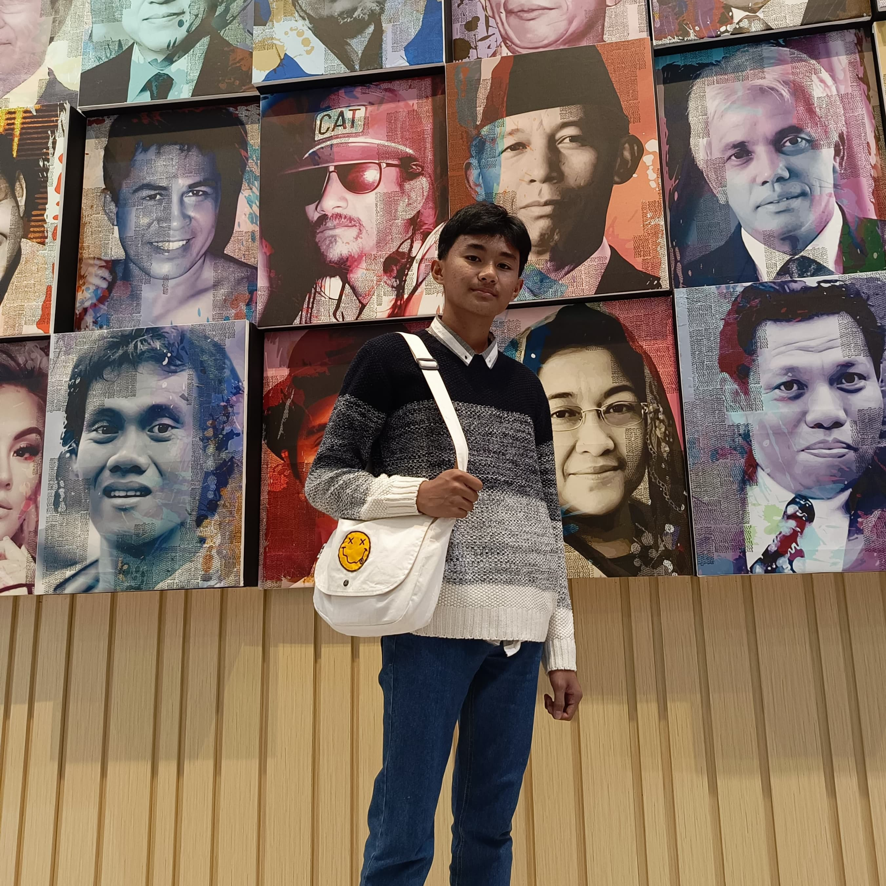
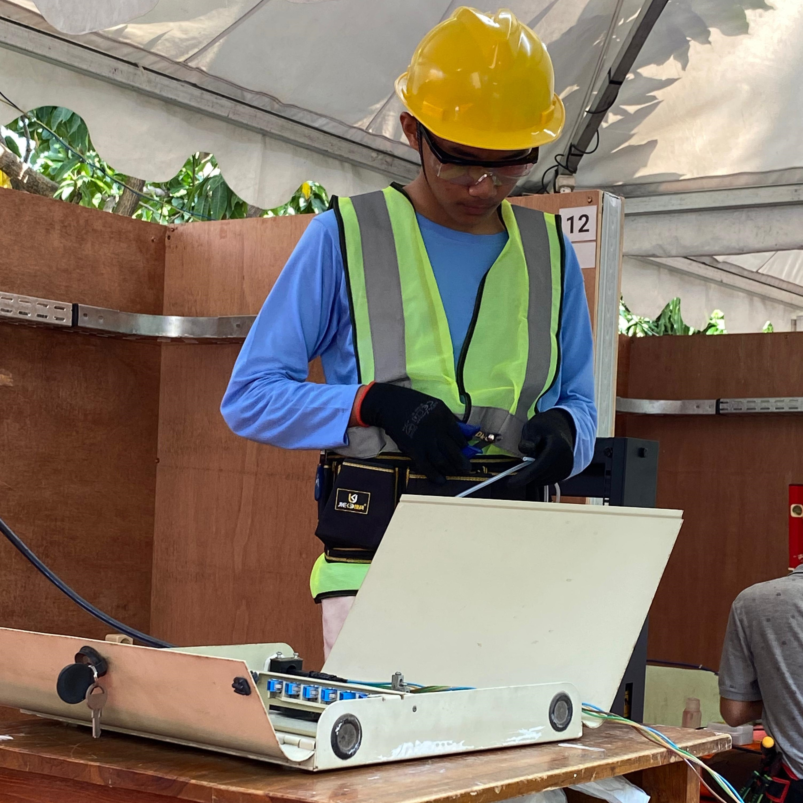
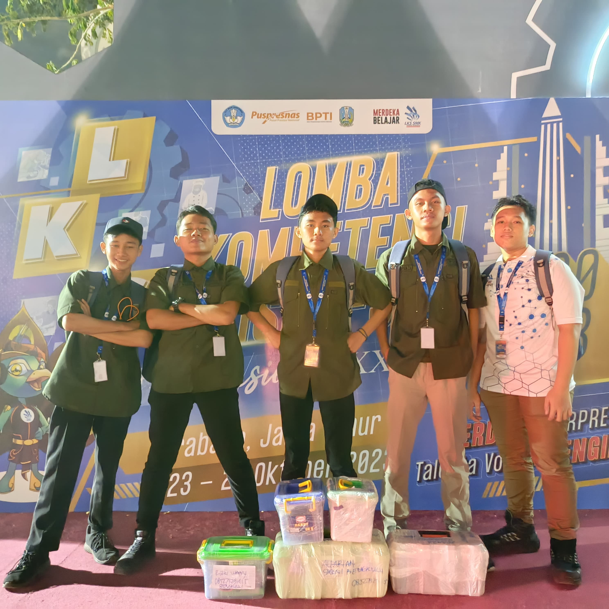
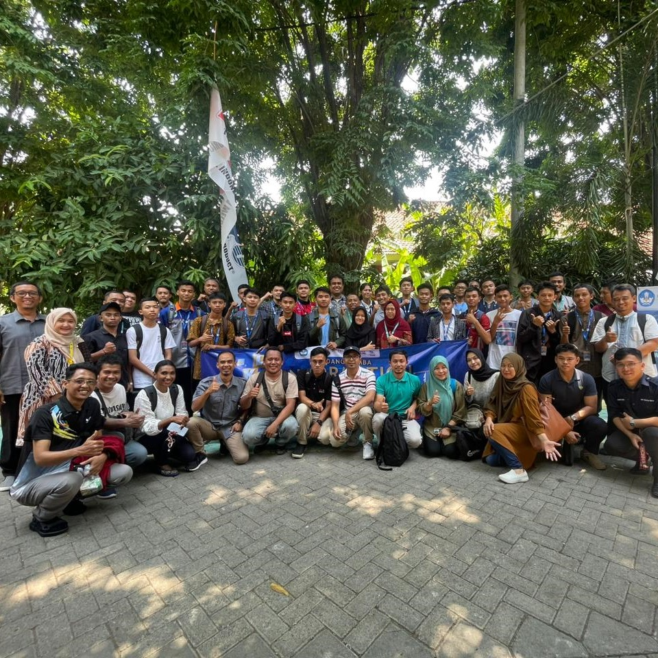
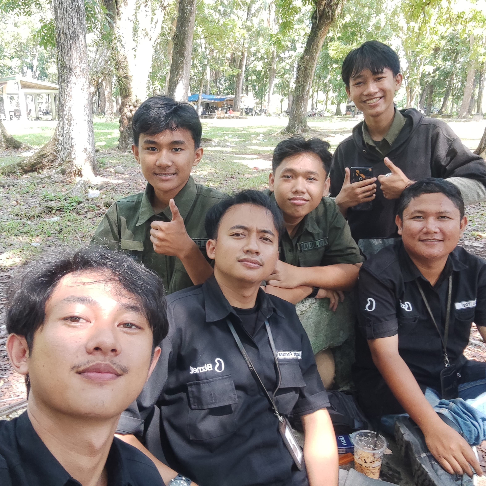

Activity
Spirit Eksplorasi
Momen yang mengingatkan saya untuk tetap berani mencoba hal baru.

Activity
Momen yang mengingatkan saya untuk tetap berani mencoba hal baru.

Activity
Setiap perjalanan memberi sudut pandang baru dan pengalaman yang berbeda.

Activity
Kompetisi dan tugas membuat saya lebih disiplin saat mengasah kemampuan.

People
Lingkungan yang positif selalu memberi energi tambahan untuk terus maju.

Activity
Progres yang stabil selalu terasa lebih bermakna daripada hasil yang instan.

Tech
Dunia jaringan dan koneksi sistem adalah salah satu bidang yang paling menarik buat saya.